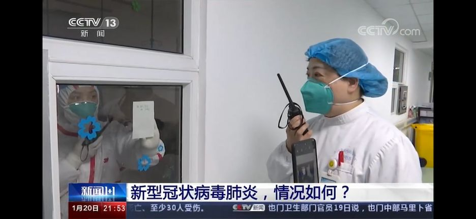

从“未见明显人传人”到“人传人”，复盘武汉疫情二十天
原文链接 备份链接 21.01.2020本文字数：3771，阅读时长大约6.5分钟 导读：“武汉肺炎是否人传人”这个问题，一直受外界关注。在官方没有明确确认之前，公众的自我防护也由此减弱，直到北京、上海、深圳出现新发病例，公众才开始真正 …

截至20日晚上20点，境内累计确诊新型冠状病毒感染肺炎病例218例，疑似病例7例，死亡4例，治愈出院25例。
武汉共有15名医务人员确诊为新型冠状病毒感染的肺炎病例，另有1名为疑似病例。
国家卫健委高级别专家组组长钟南山说，有人传人现象，新型冠状病毒的感染刚刚开始，还在爬坡，传染性和毒力没有SARS强。
春节期间，要防止传播，防止出现超级传播者。

今天（1月21日）凌晨1点45分，健康武汉官微发布消息，武汉共有15名医务人员确诊为新型冠状病毒感染的肺炎病例，另有1名为疑似病例。16例患者中，危重症1例，其余病情稳定，均已隔离治疗。
凌晨4点18分，武汉卫健委官网更新疫情，1月19日22时—1月19日24时，死亡1例，无出院病例和新增病例。死者陈某，男，89岁，2020年1月13日发病，1月18日因严重呼吸困难入院救治，1月19日23:39抢救无效死亡。患者有高血压、糖尿病、冠心病、频发室性早搏等基础疾病。
截至1月19日24时，武汉市累计报告新型冠状病毒感染的肺炎病例198例，已治愈出院25例，死亡4例。目前仍在院治疗169例，其中重症35例、危重症9例，均在武汉市定点医疗机构接受隔离治疗。
根据新华社消息，截至1月20日18时，中国境内累计报告新型冠状病毒感染的肺炎病例224例，其中确诊病例217例（武汉市198例，北京市5例，广东省14例）；疑似病例7例（四川省2例，云南省1例，上海市2例，广西壮族自治区1例，山东省1例）。日本通报确诊病例1例，泰国通报确诊病例2例，韩国通报确诊病例1例。
广东新增的13例分布如下：深圳8例、珠海3例、湛江、惠州各1例，均收治在当地定点医疗机构隔离治疗。其中，男性8例、女性5例；60岁以上老人8例，青壮年4例，10岁儿童1例。11例病例有武汉居住或旅行史，2例与病例有密切接触史。首发症状大多为发热、咳嗽（干咳为主）、乏力、胸闷、呼吸困难等。重症4例，危重症2例，无死亡病例。广东省已对密切接触者进行追踪随访，目前暂无异常。
北京新增的3例情况：2名男性患者，分别于1月7日和1月9日去过武汉，并短暂逗留，两人分别于1月13日和1月14日出现发热和呼吸道症状。1名老年女性患者，从武汉来京探亲，于1月13日出现发热和呼吸道症状。3名患者已在定点医院接受隔离治疗，其中2名病情平稳，1名患者病情危重。北京市已对所有23名密切接触者开展医学观察，目前无发热等异常情况。
在这之后一个多小时，上海卫健委发布消息，国家卫生健康委确认上海市首例输入性新型冠状病毒感染的肺炎确诊病例。
患者为56岁女性，湖北省武汉市户籍。1月12日自武汉来沪后，因发热、乏力等症状，于1月15日在本市一发热门诊就诊后即被收治入院隔离治疗。经上海市疾控部门检测，并经中国疾控中心复核，新型冠状病毒核酸检测结果为阳性。1月20日，经国家卫健委疫情应对处置领导小组的专家评估确认，该病例为新型冠状病毒感染的肺炎确诊病例。现患者体温正常，生命体征平稳，其2名在沪密切接触者正在医学观察。
截至此时，中国境内累计确诊病例218例，疑似病例7例，死亡4例，治愈出院25例。
国家卫建委发布2020年第1号公告，将新型冠状病毒感染的肺炎纳入《中华人民共和国传染病防治法》规定的乙类传染病，并采取甲类传染病的预防、控制措施。
2020年1月20日，国家卫健委高级别专家组组长、中国工程院院士、呼吸病学专家钟南山接受央视《新闻1+1》采访，对疫情进行说明。
钟南山说：“现在可以说，肯定有人传人现象。”
另外，钟南山认为新型冠状病毒的感染刚刚开始，还在爬坡，传染性和毒力没有SARS强。至于以后会怎么样，要看它的发展情况。也要具体如何控制，如何减少它的传染。“因为传染的过程也是（病毒）逐渐地适应在人体内的过程，毒力会增加。”

对于疫情防控，钟南山认为最有效的方法是早发现早治疗，确诊病例的隔离治疗非常重要，新型冠状病毒目前没有特效药，但是现在正在进行一些动物试验观察，科学研究要跟上。春节期间，估计得病的人数还会有增加，要防止传播，防止出现超级传播者。
针对如何预防新型冠状病毒，钟南山提醒：近期尽量避免前往武汉；如果有发热等不适症状需要立即到医院查看；随时佩戴口罩，但不一定必须是N95口罩。一般的口罩是能阻挡大部分带有病毒的飞沫进入呼吸道的，预防新型冠状病毒，戴口罩还是有用的。
另外，中国疾病预防控制中心流行病学首席科学家曾光接受采访时说，新型冠状病毒感染的肺炎疫情现在还处于早期，对武汉市来讲，传播进入了一种社区传播的早期。100多例病例相对武汉一千多万人口来讲是少数，只要公共卫生措施对，完全可以逆转。


我们尊重原创版权，未经允许请勿转载。
授权转载
郑琪 微信号: 1281949389
商务合作
上海：leslee 13916263824
北京：Jessie 13911125922
线索爆料、意见反馈，加入核心读者社群
请扫码联系健闻君

让朋友们看到你也在看
↓↓↓
原文链接 备份链接 21.01.2020本文字数：3771，阅读时长大约6.5分钟 导读：“武汉肺炎是否人传人”这个问题，一直受外界关注。在官方没有明确确认之前，公众的自我防护也由此减弱，直到北京、上海、深圳出现新发病例，公众才开始真正 …
原文链接 备份链接 新型冠状病毒感染肺炎疫情扩大。武汉本地两天新增确诊136例，死亡1例，治愈出院6例。 北京大兴区新增2例，有武汉旅行史；广东深圳新增1例，曾到武汉探亲。这是内地首次在武汉之外的城市报告病例。 国家卫健委卫生应急办 …
原文链接 备份链接 武汉肺炎新的确诊病例突然增加了。1月17日新增17例，16日新增4例。 泰国和日本出现三例确诊病例，中国香港、越南、新加坡等地出现了疑似病例。 但内地在武汉之外没有报告，很可能是其他地区没有对该病毒进行检测。这种 …
原文链接 备份链接 【财新网】（驻香港记者 王端）武汉新型冠状病毒肺炎患者有急剧增加趋势。 1月20日凌晨，武汉卫健委方面更新的数据显示，1月18日和19日两日共新增136名确诊患者。其中，18日增59人，19日增77人。武汉患者共198 …
原文链接 备份链接 2019年末，一场“不明原因”肺炎袭击湖北武汉。它由一种新型冠状病毒导致，而“冠状病毒”一词，唤醒了人们对16年前另一场影响深远的“不明原因肺炎”的记忆。中国的疾控系统再度面临检验。 2020年1月14日，世界卫生组 …